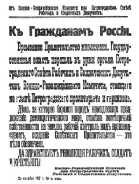
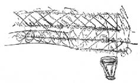

BÖLÜM IV

GEÇİCİ HÜKÜMET’İN DÜŞÜŞÜ


7 Kasım Çarşamba sabahı çok geç kalktım. Nevski’den aşağı doğru inerken Peter-Paul’den atılan öğlen toplarını işittim. Islak, puslu bir havaydı. Merkez Bankası’nın kapalı kapılarının önünde süngülü askerler duruyordu.
“Hangi yandansınız?” diye sordum. “Hükümetten mi?”
“Artık hükümet kalmadı,” diye içlerinden biri gülümseyerek cevap verdi. “Hvala Bogu! Tanrıya şükür!” Bütün öğrendiğim bu kadardı...
Tramvaylar Nevski’de bir aşağı bir yukarı gidip geliyorlar. Erkekler, kadınlar ve küçük çocuklar tramvayların her yanına asılmışlar. Dükkânlar açık; caddedeki kalabalıklar bir önceki günden daha az tedirgin. Geceleyin köylülere, cephedeki askerlere, Petrograd işçilerine seslenen ayaklanmaya karşı çeşit çeşit çağrılar asılmış her yana. Bir tanesi şöyle:
PETROGRAD MAHALLİ DUMASI’NDAN
Duma’nın 6 Kasım günü yaptığı olağanüstü bir toplantıda bir Halk Güvenlik Komitesi’nin kurulduğu, bu komitenin merkez ve kısım dumaları üyeleriyle birlikte aşağıdaki demokratik devrimci örgütlerden oluştuğu yurttaşlara bildirilir: Çayika, Köylü Delegeleri Rusya Yürütme Komitesi, Ordu örgütleri, centroflot, Petrograd İşçi ve Asker Delegeleri Sovyeti(!). Sendikalar Konseyi vb.
Halk Güvenlik Komitesi üyeleri Mahalli Duma Meclisi’nde görevli bulunacaktır. Telefon numaraları: 15 - 40, 223 - 7, 136 - 30.
7 Kasım 1917
O zaman anlamamıştım, ama sonradan bunun Duma’nın Bolşeviklere karşı savaş açması demek olduğunu anladım.
Bir Raboçi Put gazetesi aldım. Satılan başka gazete de yok gibiydi. Az sonra da beş asker kopek’i vererek bir Diyen aldım. Bolşevik gazetesi el konulan Ruskaya Voliya basımevinde, büyük boyda basılmıştı. Gazetede büyük manşetlerle şunlar yazılıydı: “BÜTÜN İKTİDAR İŞÇİ, ASKER VE KÖYLÜ SOVYETLERİ’NE! BARIŞ! EKMEK! TOPRAK!” Gizlenmiş olan Lenin’in arkadaşı Zinovyev’in başyazıda imzası vardı, yazı şöyle başlıyordu:
Her asker, her işçi, her gerçek sosyalist, her namuslu demokrat bugünkü durum karşısında yalnızca iki yol bulunduğunu anlıyor:
Ya iktidar burjuva-derebey ekibinin elinde kalacaktır; bu, işçilere, askerlere ve köylülere karşı yapılan çeşitli baskıların ve aynı zamanda savaşın sürdürülmesi ve sonunda açlık ve ölüm demektir.
Ya da iktidar devrimci işçi, asker ve köylülerin eline geçecektir ve derhal adil bir barış teklif edilecektir. O zaman köylülere toprak, işçilere sanayi denetimi sağlanacak, o zaman, açlara da ekmek bulunacak ve bu saçma savaş bitecektir!..
Diyen’de o geceki olaylar parça parça anlatılıyordu. Bolşevikler telefon santralini, Baltık istasyonunu, telgrafhaneyi ele geçirmişlerdi; Peterhof yunker’leri Petrograd’a gelememişlerdi; Kazaklar kararsızdılar; bazı bakanlar tutuklanmıştı; Şehir Milisi’nin başı Meyer vurulmuştu; tutuklamalar, karşı-tutuklamalar, nöbetçi askerlerle yunker’ler ve Kızıl Muhafızlar arasında çatışmalar... (1).
Morskaya’nın köşesine gelince Menşeviklerin Askerî Bölüm Sekreteri Yüzbaşı Komberg’e koştum. Gerçekten ayaklanma olup olmadığını sorduğum zaman yorgun argın omuzlarını silkti ve şöyle cevap verdi: “Çort Zinayet! Şeytanın bileceği iş! Evet, Bolşevikler iktidarı ele alabilirler, ama üç günden çok ellerinde tutamazlar. Hükümet yönetecek adamları yok. Belki onları bu işi denemeye bırakmak daha iyi; bu onların sonu olacaktır...”
St. İsak meydanı köşesinde bulunan askerî otelin önünde silahlı bahriyeliler nöbet tutuyorlardı. Girişteki holde temiz giyimli çok sayıda subay dolaşıp duruyor, ya da birbirleriyle konuşuyorlar. Bahriyeliler dışarı çıkmalarına izin vermiyor...
Birdenbire dışarıdan bir silah sesi işitildi. Bu sesi birçok dağınık silah sesi izledi. Dışarı fırladım. Rusya Cumhuriyeti Konseyi’nin bulunduğu, Marinski sarayında olağanüstü bir şeyler oluyordu. Geniş meydan boyunca bahriyeliler çaprazlama bir hat tutmuşlardı. Silahları hazır durumda, binanın damına bakıyorlar.
“Provokatziya! Üstümüze ateş edecekler!” diye bağırdı içlerinden biri. Başka biri de kapıya doğru koştu.
Sarayın batı köşesinde büyük bir zırhlı otomobil duruyordu, üzerinde kızıl bir bayrak. Bayrağın üstünde kırmızı harflerle şunları yazılı: S.R.S.D. (Sovyet Raboçi Soldatski Deputatov). Bütün silahlar St. İsak’a doğrultulmuştu. Novaya Ulitza’nın ağzında bir barikat kurulmuştu: sandıklar, fıçılar, eski somyalar, arabalar... Bir kereste yığını Moyka rıhtımının sonunu kapatmıştı. Yakınlardaki bir odun deposundan getirtilen odunlarla binanın önünde bir yığınak yapılmaya çalışılıyordu...
“Çatışma olacak mı?” diye sordum.
Bir asker sinirli sinirli, “Az sonra,” diye cevap verdi. “Buradan uzaklaş yoldaş, vurulursun. Şu yandan gelecekler.” Amirallik binasını gösteriyordu.
“Kim gelecek?”
“Söylemem kardeş,” diye cevap verdi ve yere tükürdü.
Saray kapısının önünde bir asker ve bahriyeli kalabalığı vardı. Bir bahriyeli Rusya Cumhuriyet Konseyi’nin artık kalmadığını söylüyordu: “İçeri girdik,” dedi, “ve bütün kapıların önüne yoldaşları dizdik. Karşıdevrimci Kornilovcuya çıktım. Başkan sandalyesinde oturuyordu. ‘Konsey kalmadı,’ dedim, ‘hemen koş git evine!’ dedim.”
Güldüler. Elimde gazeteleri sallaya sallaya basın galerisinin kapısına kadar gidebildim. Güler yüzlü, iriyarı bir bahriyeli beni durdurdu. İzin kâğıdını gösterdiğim zaman yalnızca şunu söyledi: “Tanrı olsan, yoldaş, yine de buradan geçemezsin!” Kapının penceresinden bir Fransız gazetecisinin şaşkın yüzünü ve hareketlerini görüyordum; gazeteciyi içeri kilitlemişlerdi...
Ön taraflara doğru, birtakım askerlerin ortasında, kısa boylu, general üniformalı kır saçlı biri duruyordu. Yüzü kıpkırmızıydı.
“Ben General Alekseyev’im!” diye bağırıyordu. “Bir üstünüz ve bir Cumhuriyet Konseyi üyesi olarak geçmeme izin vermenizi istiyorum!” Muhafız başını kaşıdı, göz ucuyla tedirgin tedirgin baktı; yaklaşan bir subaya işaret etti. Subay generalin kim olduğunu anlayınca şaşırdı ve ne yaptığını bilmeden önünde selam durdu.
“Vaşe Vuysokoprevoskhoditelstvo – Sayın Generalim,” dedi, ellerini eski rejim zamanında olduğu gibi iki yanına sertçe yapıştırdı. “Saraya girmek kesin olarak yasaklanmıştır. Ben izin veremem...”
Bir otomobil geldi. İçinde Gotz’u gördüm. Büyük bir memnunlukla gülüyordu. Az sonra başka bir otomobil geldi. Önde askerler oturuyorlardı. Arkası Geçici Hükümet’in tutuklanmış üyeleriyle doluydu. Askerî Devrimci Komite’nin Litvanyalı üyesi, Peters, meydanı geçerek koşa koşa geldi.
“Galiba bu bayları dün gece topladınız?” dedim.
Hayal kırıklığına uğramış bir okul öğrencisi haliyle, “Eh, öyle,” diye cevap verdi. “Aptallar, biz daha bir karara varmadan çoğunu salıverdiler...”
Voskresenski Prospekt’e doğru bahriyeliler dizilmişti. Arkalarında askerler... Göz alabildiğine uzayan bir sıra asker...
Amirallik binası yolundan Kışlık Saray’a gittik. Kışlık Saray’a girilecek bütün yerleri nöbetçiler kapamışlardı. Sarayın batıya bakan yüzü boydan boya asker kordonu altında. Çevrede birçok meraklı yurttaş. Uzakta, Saray avlusundan odun çıkarıp ana kapının önüne yığan askerler. Başka bir hareket yok.
Nöbetçilerin hükümetten yana mı Sovyet’ten yana mı olduklarını anlamadık. Smolni’den aldığımız kâğıtlar geçmiyordu artık, ama biz yine önemli bir adam tavrı takınarak kordonun başka bir yanına yanaştık, Amerikan pasaportlarımızı göstererek, “Resmî bir işimiz var!” dedik ve aralarından geçtik. Sarayın kapısında, kırmızı ve sırma yakalıklı, parlak düğmeli, mavi üniformasını giymiş tanıdık bir şvetzari paltolarımızı aldı. Biz yukarı kata çıktık. Halı döşeli, karanlık loş koridorlarda birkaç hademe dolaşıp duruyordu; Kerenski’nin kapısında genç bir subay bıyıklarını çiğneyerek yukarı aşağı gidip geliyordu. Başbakan’la konuşup konuşamayacağımızı sorduk. Eğilerek selam verdi ve topuklarını birbirine vurdu.
Fransızca, “Hayır, maalesef!” dedi. “Aleksandr Feodoroviç şu anda çok meşgul bulunuyorlar...” Bir an bize baktı. “Aslında kendileri burada yok...”
“Nerede?”
“Cepheye gittiler (2). Ve biliyor musunuz, otomobilinde yeterince benzin bile yoktu. İngiliz Hastanesi’ne bir adam gönderip bir miktar ödünç benzin almak zorunda kaldık.”
“Bakanlar buradalar mı?”
“Odaların birinde toplantı halindeler... Ama hangi odada bilmiyorum.”
“Bolşevikler geliyorlar mı?”
“Elbette. Elbette geliyorlar. Onların gelmekte olduklarını bildiren telefonu her an bekliyorum. Ama biz de hazırız. Sarayın önünde yunker’ler duruyorlar. Şu kapının ötesindeler.”
“İçeri girebilir miyiz?”
“Hayır. Katiyen. İzin yok.” Birden hepimizin elini sıktı ve uzaklaştı. Yasaklanan kapıya döndük. Holün ortasına geçici bir bölme yapılmış, kapısı dışarıdan kilitlenmişti. Bölmenin arkasından birtakım sesler geliyordu ve biri gülüyordu. Sarayın bu büyük holü dışında, her yer bir mezar sessizliği içindeydi. Eski şvetzar’lardan biri koşa koşa geldi. “Hayır, oraya giremezsiniz.”
“Kapı neden kilitli?”
“Askerleri içeride tutmak için,” diye cevap verdi adam. Birkaç dakika sonra, bir bardak çay içmek istediğini söyleyerek yeniden holün baş taraflarına doğru gitti. Kilitli kapıyı açtık.
İçeride birkaç asker nöbet tutuyordu. Bir şey söylemediler bize. Koridor’un sonunda, büyük, süslü bir kapı ve kapının kenarlarında altın işlemeli kornişler ve büyük kristal avizeler. Bu avizelerin arkasında koyu renk birkaç avize daha. Bir parke döşemenin her iki yanına pis örtüler ve battaniyeler yayılmış. Askerler oraya buraya serilip yatmışlar. Her yan sigara izmaritleri, ekmek parçaları, bezler, pahalı Fransız içki şişeleriyle dolu. Omuzlarında yunker okullarının kırmızı apoletleri bulunan birtakım askerler, sigara dumanı ve yıkanmamış insan kokularının boğucu havası içinde, oraya buraya gidip geliyorlar. Bir tanesinin elinde, saray mahzenlerinden çıkarıldığı belli olan beyaz bir Fransız şarabı. Biz aralarından geçerken hayretle baktılar. Odadan odaya geçtik. Sonunda büyük hükümet salonuna geldik. Salonun uzun ve pis pencereleri meydana bakıyordu. Duvarlarda kalın yaldızlı çerçeveler içinde eski savaş sahnelerini gösteren tablolar: “12 Ekim 1812”, “6 Kasım 1812” ve “16-18 Ağustos 1813”... Tablolardan birinin üst sağ köşesi yırtılmış.
Burası artık büyük bir kışlaydı. Yerle duvarların görünüşünden haftalardan beri böyle olduğu anlaşılıyordu. Pencere kenarlarına makineli tüfekler yerleştirilmişti. Döşeklerin arasında tüfekler çatılmıştı.
Biz tablolara bakarken sol kulağımdan doğru bir alkol kokusu geldi burnuma; bir ses akıcı bir Fransızcayla şunları söylüyordu: “Resimlere hayranlıkla baktığınıza göre yabancı olmalısınız.” Kısa boylu, şişman bir adamdı. Şapkasını çıkardığı zaman çıplak kafasını da gördük.
“Amerikalı, ha? Memnun oldum. Ben Kıdemli Yüzbaşı Vladimir Artzibaşev. Emredin.” Biri kadın olan dört yabancının, saldırı bekleyen bir ordunun savunma düzeni içinde gezmesi ona çok garip gelmişe benziyordu. Rusya’nın durumundan yakınmaya başladı:
“İş yalnız bu Bolşeviklerle bitmiyor,” dedi. “Rus ordusunun güzel gelenekleri de yıkıldı. Çevrenize bakınız. Bütün bunlar subay okullarından gelme. Hiçbir efendilik izi görüyor musunuz onlarda? Kerenski subay okullarını herkese açtı. Her asker, sınavını verirse subay olabiliyor. Elbette ki birçoklarını devrim zehirlemiştir bunların...”
Bir sonuca varmadan konuyu değiştirdi: “Rusya’dan kaçmak istiyorum. Amerikan ordusuna girmeye karar verdim. Lütfen konsolosluğunuza gidip benim için gerekli hazırlıkları yapabilir misiniz? Size adresimi vereyim.” Bizim karşı koymamıza rağmen bir kâğıdın üzerine adresini yazdı ve kendisini birden daha rahat hisseder gibi oldu. Adres hâlâ yanımda: “Oranienbaumskaya Shkola Praporshtchikov Q, Staraya Peterhof.”
Bize odaları gezdirirken her şeyi anlatıyordu: “Bu sabah erkenden bir geçit resmi yaptık,” dedi. “Kadın kıtaları hükümete bağlı kalmaya karar verdiler.”
“Kadın askerler sarayda mı?”
“Evet, arka odalarda. Bir karışıklık çıkarsa onlara bir şey olmasın diye oraya yerleştirdik.” İçini çekti: “Doğrusu büyük bir sorumluluk,” dedi.
Bir süre pencerede durduk. Sarayın önündeki meydana baktık. Uzun kaputlu üç yunker bölüğü duruyordu. Uzun boylu enerjik bir subay onlara bir şey söylüyordu. Tanıdım kendisini: Geçici Hükümet’in Baş Askeri Komiseri Stankieviç. Birkaç dakika sonra bölüklerden ikisi sert bir sesle silahlarını omuzlarına astı, üç kere kesik kesik bağırdı. Sallana sallana meydanı geçtiler, Kızıl Kemer’in altından geçerek sessiz şehrin içinde kayboldular.
“Telefon santralini almaya gidiyorlar,” dedi biri. Yanımızda üç askerî okul öğrencisi duruyordu. Onlarla konuşmaya başladık. Bize halktan çektiklerini anlattılar ve adlarını verdiler: Robert Olev, Aleksi Vasilyenko ile Erni Sachs adında bir Estonyalı. Ama şimdi artık subay olmak istemiyorlarmış, çünkü artık halk subayları sevmiyormuş. Gerçekten ne yapacaklarını bilmeyen bir halleri vardı. Mutlu olmadıkları açıktı.
Ama az sonra övünmeye başladılar: “Eğer Bolşevikler gelecek olurlarsa onlara nasıl dövüşüleceğini göstereceğiz. Onlar savaşmaya cesaret edemezler, korkaktırlar. Ama, olur ya, bizden üstün çıkarlarsa hepimiz son kurşunu kendimize sıkacağız...”
Tam bu sırada pek uzaktan gelmediği anlaşılan silah sesleri işitildi. Meydanda bulunan halk kaçışmaya başladı, yüzükoyun yerlere yatıyorlardı. Köşe başlarını tutmuş olan izvoşçik’ler dörtnala koşturdular. Sarayda bir gürültüdür koptu. Askerler oraya buraya koşuşuyor, silahlarını, fişekliklerini alıyorlar ve bağırıyorlardı: “Geliyorlar! Geliyorlar!” Ama az sonra ortalık yeniden sessizleşti. İzvoşçik’ler geri döndüler, yerlere yatmış olanlar ayağa kalktılar. Kızıl Kemer’in altından yunker’ler göründü: önde birinin koluna arkadaşları girmiş, getiriyorlardı.
Saraydan çıktığımızda vakit oldukça ilerlemişti. Meydandaki nöbetçiler çekilmişlerdi. Hükümet binalarının önü sanki boşalmıştı. Akşam yemeği için Hotel France’a gittik. Tam biz çorbamızı içerken garson geldi. Yüzü sapsarı... Binanın arkasındaki büyük yemek salonuna geçmemizi istedi. Öndeki lokantanın ışıklarını söndüreceklermiş. “Çok silah atılacak,” dedi.
Yeniden Morskaya’ya çıktığımızda ortalık kararmıştı. Yalnız Nevski’nin köşesinde bir sokak lambası pırıldayıp duruyordu. Altında büyük bir zırhlı otomobil. Motoru çalışıyor, arkasından dumanlar çıkıyordu. Küçük bir çocuk otomobilin üstüne çıktı ve bir makineli tüfeğin namlusuna baktı. Çevrede askerler ve bahriyeliler dolaşıyorlar, anlaşılan bir şeyler bekliyorlardı. Biz de Kızıl Kemer’e kadar gittik. Burada toplu halde duran birtakım askerler, ışıkları pırıl pırıl yanan Kışlık Saray’a bakıyorlar, yüksek sesle bir şeyler konuşuyorlardı.
“Hayır, Yoldaşlar,” diyordu biri. “Onlara ateş edemeyiz. Kadın kıtaları var orada. Rus kadınlarına ateş ettiğimizi söylerler sonra.”
Yeniden Nevski’ye geldiğimiz zaman köşeden başka bir zırhlı otomobil çıktı. Üstündeki mazgaldan biri başını çıkardı.
“Haydi!” diye bağırdı. “Gidelim. Hücuma geçelim!”
Öteki arabanın şoförü yaklaştı ve sesini işittirmek için bağırdı: “Komite bize bekleyin dedi. Odunların arkasında toplar varmış...”
Burada tramvaylar işlemiyordu. Sokaktan geçen pek az insan vardı. Işık yoktu. Ama birkaç sokak ileride tramvayların işlediğini, insanların geçtiğini, dükkânların ışıklar içinde olduğunu ve sinemaların elektrikli yazılarının yandığını görüyorduk. Hayat orada eskisi gibi sürüp gidiyordu. Marinski Tiyatrosu’nda baleye gitmek için önceden bilet almıştık. Bütün tiyatrolar açıktı. Ama tiyatroların dışında durum oldukça heyecanlıydı...
Polis Köprüsü’nü kapatan odun yığınlarının üzerinden karanlıkta geçtik ve Strogonov Sarayının önünde bazı askerlerin üç inçlik bir sahra topunu mevziye sokmaya çalıştıklarını gördük. Çeşitli üniformalar giymiş birtakım insanlar gelişigüzel gelip gidiyorlar, bir şeyler konuşuyorlardı.
Sanki bütün şehir Nevski’de dolaşmaya çıkmıştı. Her köşede bir kalabalık toplanıyor, ateşli tartışmalar yapılıyordu. Bir düzine süngülü inzibat askeri sokak başlarında dolanıyor, pahalı kürkler giyinmiş, kırmızı yüzlü ihtiyarlar onlara yumruklarını sallıyorlar, temiz giyinmiş kadınlar çığlıklar atıyorlar... Askerler pek az tartışıyor; daha çok heyecanlı heyecanlı gülümsüyorlar... Cadde boyunca zırhlı arabalar gidip geliyor, üzerlerinde eski çarların adları yazılı: Oleg, Rurik, Sviyetoslav. Yine üzerlerinde kocaman harflerle R.S.D.R.P. (Rossiskaya Sotsiyal - Demokratiçeskaya Raboçaya Partiya.5 Bir adam, koltuğunun altında bir sürü gazeteyle ortaya çıktı ve halk hemen üzerine saldırdı. Birbirlerini ite kaka bir ruble, beş ruble, on ruble vererek gazete aldılar. Raboçi Soldat gazetesiydi. Proleter devrimin başarısını, hapiste yatan Bolşeviklerin kurtulduklarını yazıyor ve cephedeki ordu ile cephe gerisinde bulunanları devrimi desteklemeye çağırıyordu... Dört sayfalık heyecanlı bir gazete; büyük harflerle basılmış; içinde başka bir haber yok...
Sadovaya’nın köşesinde, aşağı yukarı iki bin kişi toplanmıştı. Uzun bir binanın damına bakıyorlardı. Damda ufak bir kıvılcım yanıp sönüyordu.
Uzun boylu bir köylü, yıldızı göstererek, “Görüyor musunuz?” dedi. “Bir provokatör işi. Halkın üzerine ateş açacaklar...” Kimse gidip de durumu incelemeyi düşünmedi.

Kışlık Saray’ın tesliminden hemen sonra bir kamyondan dağıtılmasına
yardım ettiğimiz, Askerî Devrimci Komite tarafından yayımlanan ve Geçici
Hükümet’in düştüğünü ilan eden bildiri.
Biz Smolni’ye yaklaşırken binanın koskocaman yüzü ışıklar içinde, pırıl pırıldı. Binaya giden her caddede hızlı hızlı yürüyen belli belirsiz insan biçimleri... Otomobiller, motosikletler gelip gidiyor; kocaman bir file benzeyen zırhlı bir otomobil, mazgalında iki kızıl bayrak asılı, canavar düdüğünü öttüre öttüre, ağır ağır yürüyor. Hava soğuk; Kızıl Muhafızlar dış kapıda ısınmak için ateş yakmışlar. İç kapıda da başka bir ateş yanıyor. Nöbetçiler bu ateşin ışığında bizim izin kâğıtlarımızı sökmeye çalıştılar ve bizi yukarıdan aşağı incelediler. Kapının iki yanında duran makineli tüfeklerin örtüleri çıkarılmıştı, mermi kuşakları yılanlar gibi sarkıyordu. Avludaki ağaçların altında koyu renkli birçok zırhlı araba. Motorları çalışıyor. Uzun, çıplak, az ışıklı salonlarda, ayak seslerinin çıkardığı gürültü, bağrışmalar çağrışmalar... Bir pervasızlık havası var her yanda... Yukarı kattan bir kalabalık aşağıya döküldü: Siyah gömlekli, siyah kalpaklı işçiler; çoğunun omzunda tüfek, üstlerinde kaba, pis renkte kaputları, başlarında gri kürkten yapılma şapki’larıyla askerler... Bir lider ya da bir başkası –Lunaçarski, Kamenev– şaşkın şaşkın, kollarında dosyalarla, hep bir ağızdan konuşulan bir grubun ortasına dalıyorlar. Petrograd Sovyeti’nin olağanüstü toplantısı bitmiş. Kamenev’i durdurdum. Kamenev kıpır kıpır bir adam. Geniş, canlı yüzü omuzlarına gömülmüş. Hiçbir giriş yapmadan, hemen o sırada alınmış olan kararın bir kopyasını Fransızca olarak bize hızlı hızlı okudu:
Petrograd proletaryasının ve garnizonunun muzaffer devrimini selamlayan Petrograd İşçi ve Asker Delegeleri Sovyeti, bu ayaklanmada yığınların gösterdiği birliği, örgütü, disiplini ve tam işbirliğini önemle belirtir; çok az ayaklanmada bu kadar az kan akmış ve pek az isyan böylesine başarılı olmuştur.
Sovyet, devrimin, sovyetlerin hükümeti olarak işçi ve köylü hükümetini yaratacağı ve bu hükümetin sanayi proletaryasına tekmil yoksul köylülerin desteğini sağlayacağı, böylelikle yurdu savaşın yarattığı büyük felaketten kurtaracak tek yol olan sosyalizme sağlam adımlarla götüreceği konusundaki inancını belirtir.
Yeni işçi ve köylü hükümeti savaşan ülkelere hemen adil ve demokratik bir barış teklif edecektir.
Hükümet büyük toprak mülkiyetini hemen kaldıracak ve toprağı köylülere verecektir. Hükümet ürünlerin üretimi ve dağılımı üzerinde işçi denetimini sağlayacak ve bir devlet tekeli haline gelecek olan bankalar üzerinde genel denetim kuracaktır.
Petrograd İşçi ve Asker Sovyeti Rusya’nın bütün işçilerini ve köylülerini bütün güçleri ve bağlılıklarıyla proleter devrimini desteklemeye çağırır. Sovyet, yoksul köylülerle müttefikleri olan şehir işçilerinin sosyalizm için gerekli olan tam devrimci düzeni sağlayacaklarına emindir…
“O halde davayı kazanılmış mı sayıyorsunuz?”
Omuzlarını kaldırdı: “Yapılacak çok iş var. Korkunç derecede çok. Daha yeni başlıyor...”
Merdiven başında Sendikalar Başkan Yardımcısı Riyazanov’a rastladım. Karanlık bir yüzü var. Kır bıyığını ısırıyor: “Çılgınlık” diye bağırıyor. “Avrupa işçi sınıfı hiçbir şey yapmayacak! Bütün Rusya...” Birine işaret etmek için elini salladı ve uzaklaştı. Riyazanov da Kamenev de ayaklanmaya girişmekten yana değillerdi ve bu yüzden Lenin’in o korkunç dilinden çekmedikleri kalmamıştı...
Önemli bir toplantı yapılmıştı. Troçki Askerî Devrimci Komite adına Geçici Hükümet’in artık varolmadığını ilan etmişti.
“Burjuva hükümetlerinin karakteri,” demişti, “halkı aldatmaktır. Biz, İşçi, Asker ve Köylü Delegeleri Sovyetleri’yse tarihte şimdiye kadar görülmemiş bir şeyi denemeye çalışıyoruz; biz neferlerin, işçilerin ve köylülerin ihtiyaçlarını karşılamaktan başka bir amaç gütmeyen bir iktidar kuracağız.”
Lenin ortaya çıkmış, büyük bir sevinçle karşılanmış, dünya sosyal devrimini müjdelemişti... Ve Zinovyev şöyle bağırmıştı: “Uluslararası proletaryaya olan borcumuzu bugün ödüyoruz ve savaşa, emperyalistlere ve özellikle katil Wilhelm’e korkunç öldürücü darbeyi vurduk...”
Sonra Troçki kalkışmanın başarıya ulaştığına dair telgrafların cepheye gönderildiğini, ama cepheden henüz cevap alınmadığını bildirmişti. Birliklerin Petrograd’a doğru yürüdükleri söyleniyordu... Askerlere doğruyu anlatacak bir heyetin gönderilmesi gerekti.
Bağrışmalar: “Rusya Sovyetleri Kongresi’nin yetkisine tecavüz ediyorsunuz.” Troçki soğuk soğuk cevap veriyor: “Evet, Petrograd işçi ve erlerinin ayaklanması Rusya Sovyetleri Kongresi’nin yönünü şimdiden çizmiştir!”
İşte biz bu sırada, kapıda bağırıp çağıran kalabalığı yardık ve büyük toplantı salonuna girdik. Beyaz şamdanların altında, sıraların üzerinde, aralıklarda ve duvar köşelerinde, her pencerenin kenarında, dahası kürsünün yanında bile, Rusya’nın her tarafından gelen işçi ve asker delegeleri oturmuşlar, başkanın zilini büyük bir sessizlik ve ara sıra da korkunç bağırmalar arasında bekliyorlar. Salonda soba yoktu; yalnız yıkanmamış vücutlardan çıkan o boğucu sıcaklık ısıtıyordu salonu. Salondakilerin üzerinde pis bir sigara dumanı yükseliyor, duman ağır havada asılıp kalıyordu. Zaman zaman önemli biri kürsüye çıkıyor ve yoldaşlardan sigara içmemelerini rica ediyor; o zaman herkes, sigara içenler bile, bağırışlara uyarak; “Sigara içmeyiniz, Yoldaşlar!” diyor ve yine sigara içmeye devam ediyordu. Obukov fabrikasından gelen bir anarşist delege, Petrovski, yanında bana yer açtı. Tıraş olmamıştı ve pisti. Askerî Devrimci Komite’de üç geceden beri uyku uyumadan çalışmıştı.
Platformda eski Çayika liderleri oturuyordu. İlk gününden beri yönettikleri sovyetleri son olarak yöneteceklerdi; çünkü şimdi sovyetler onlara başkaldırmıştı. Bu adamların titizlikle kılavuzluk etmeye çalıştıkları Rus devriminin ilk dönemi artık kapanıyordu... İçlerindeki en önemli üç kişi ortada yoktu: Kerenski, ayaklanmaya katılmamış olan kasabalardan geçerek cepheye gidiyordu; ihtiyar kartal Çeidze küsmüş, kendi Gürcistan dağlarına çekilmiş orada veremden ölmek üzereydi; ince ruhlu Tseretelli’nin de olup bitenlerden canı sıkkındı ama yeniden dönecek ve kaybedilmiş bir dava için güzel sözler döktürecektir. Gotz, Dan, Lieber, Bogdanov, Broido, Fillipovski buradalar. Hepsinin yüzleri bembeyaz, gözleri çökmüş ve hepsi de küskün. Önlerinde Rus sovyetlerinin ikinci siyezd’i kıpır kıpır kaynıyor. Tepelerinde Askerî Devrimci Komite durmadan çalışıyor, ayaklanmanın iplerini elinde tutuyor ve ikide bir kolunu uzatarak vuruyor... Saat gecenin 10: 40’ı...
Yumuşak yüzlü, çıplak kafalı Dan çıngırağı çalıyor. Üstünde biçimi kalmamış askerî cerrah üniforması var. Birden her yanı bir sessizlik kaplıyor. Boğuk bir sessizlik. Bu sessizliği yalnız kapıdakilerin itişip kakışmaları ve tartışmaları bozuyor.
“İktidar elimize geçmişti,” diye üzüntüyle söze başladı. Bir an durdu, sonra hafif bir sesle devam etti: “Yoldaşlar! Sovyetler Kongresi çok olağanüstü şartlar altında ve çok olağanüstü bir anda toplanmaktadır. Bu durumda Çayika’nın size neden politik bir söylev vermeyi gereksiz saydığını herhalde anlarsınız. Eğer benim de bir Çayika üyesi olduğumu ve şu anda partideki yoldaşlarımın Kışlık Saray’da, bombardıman altında, Çayika’nın kendilerine verdiği görevleri yapmak için kendilerini feda etmekte olduklarını hatırlayacak olursanız durumu daha iyi anlamış olursunuz.” (Karışık gürültüler).
“İşçi ve Asker Delegeleri Sovyetleri İkinci Kongresi’nin birinci toplantısı açılmıştır, ilan ediyorum!”
Başkanlık Divanı seçimi, gürültü ve kargaşa içinde yapıldı. Avanessov, Bolşeviklerle, Sol Sosyalist Devrimciler ve Menşevik Enternasyonalciler arasında varılan anlaşmada Başkanlık Divanı’nın orantıya dayanmasına karar verildiğini açıkladı. Birkaç Menşevik protesto etmek üzere ayağa kalktı. Sakallı bir asker onlara bağırdı: “Azınlıkta olduğumuz sırada, biz Bolşeviklere yaptıklarınızı unutmayın!” Sonuç: Başkanlık Divanına 14 Bolşevik, 7 Sosyalist Devrimci, 3 Menşevik ve 1 Enternasyonalci –Gorki’nin Grubu– seçildi. Sağ ve Merkez Sosyalist Devrimciler adına konuşan Hendelman Başkanlık Divanı’nda görev almayı reddettiklerini söyledi; Menşevikler adına Hinçuk da aynı şeyi açıkladı. Bazı durumlar aydınlanıncaya kadar Menşevik Enternasyonalciler de Başkanlık Divanı’na katılmayacaklardı. Dağınık alkışlar ve yuhalar... Bir ses: “Dönekler, bir de kendinize sosyalist diyorsunuz!” Ukrayna delegelerinin bir temsilcisi yer istedi ve aldı. Sonra eski Çayika üyeleri yerlerinden kalkarak aşağıya indiler, yerlerine Troçki, Kamenev, Lunaçarski, Madam Kollantay, Nogin geçti... Salon alkıştan inliyordu. Daha dört ay önceye kadar herkesin kötü gözle baktığı ve hükümetin yakalayıp hapse attığı Bolşevikler, şimdi isyanın en ateşli zamanında, bu yüksek yere çıkmayı başarabilmişlerdi!
Günün görevi, dedi Kamenev, önce iktidarın örgütlenmesi, sonra, savaş ve barış sorunu, üçüncü olarak da Kurucu Meclis. Lozovski ayağa kalkarak açıkladı: Bütün partileri temsil eden komisyonun vardığı anlaşma gereğince, önce Petrograd Sovyeti’nin raporu dinlenecek ve tartışılacak, sonra söz Çayika ve çeşitli partilerin üyelerine bırakılacak ve gündeme geçilecekti.
Ama tam bu sırada toplantıda bulunanların gürültüsünü bastıran, tedirgin edici, sürekli bir ses işitildi: Top sesleri. Toplantıdakiler buğulu pencerelere kuşkuyla baktılar ve hepsini bir ateştir bastı. Söz isteyen Martov kaba kaba bağırdı: “İç savaş başlıyor, yoldaşlar! İlk iş bu buhranın barış yoluyla çözülmesi olmalıdır. Prensip olarak ve siyasal açıdan, hemen iç savaşı önleme çarelerini konuşmalıyız. Caddelerde kardeşlerimiz vurulup ölüyorlar. İktidar sorunu şu anda, Sovyetler Kongresi’nin açılışından önce, devrimci partilerden birinin örgütlediği bir askerî komployla çözülmüş bulunuyor...” Bir an sesi gürültülere karıştı, işitilmedi. “Bütün devrimci partiler gerçeği görmelidirler! Kongrenin karşılaştığı ilk sorun iktidar sorunudur ve bu sorun silah gücüyle caddelerde zaten çözülmüş bulunuyor!.. Bütün demokratik kuvvetlerin tanıyacağı bir iktidar kurmalıyız. Eğer kongre devrimci demokrasinin sesi olmak istiyorsa gelişen iç savaşın karşısında eli kolu bağlı duramaz. Bunun sonucu karşıdevrimin tehlikeli bir surette ortaya çıkması olur... Barışçı sonuçlara ancak birleşik demokratik bir otoriteyle varılabilir... Öteki sosyalist partilerle ve örgütlerle konuşmak üzere bir heyet seçmeliyiz...”
Pencerelerden boğuk boğuk top sesleri geliyor ve delegeler birbirlerine bağırıyorlardı. Yeni Rusya, böylece, karanlıklarda patlayan toplar, kinler, korkular ve her şeyi göze almış insanların arasından doğuyordu.
Sol Sosyalist Devrimcilerle Birleşik Sosyal Demokratlar Martov’un önergesini desteklediler. Kabul edildi. Bir asker, Rusya Köylü Sovyetleri’nin kongreye delege göndermeyi reddettiğini söyledi, resmî bir çağrı ile birlikte bir komitenin gönderilmesini teklif etti. “Bazı delegeler yok,” dedi. “Onlara da oy hakkı verilmesini teklif ediyorum.” Teklif kabul edildi.
Üzerinde yüzbaşı üniforması bulunan Haraş, heyecanla kürsüye çıktı: “Bu kongreyi yönetenler politika dolandırıcılarıdır!” diye bağırdı. “Bize iktidar sorununu çözeceğimizi söylediler... Oysa bu sorun bizim arkamızdan, kongrenin açılmasından önce çözülmüş bulunuyor! Kışlık Saray ateş altında. İndirilen bu darbelerle böyle bir serüveni göze alan politik partinin tabutuna çiviler çakılmış oluyor!” Bağırmalar. Onun arkasından Garra: “Biz burada barışı düşünürken caddelerde kan gövdeyi götürüyor... Sosyalist Devrimcilerle Menşevikler olaylara karışmak istemiyorlar ve bütün kamu kuvvetlerini, iktidarı ele geçirmek için girişilen bu teşebbüse karşı koymaya çağırıyorlar...” 12. Ordu’dan gelen ve Trudovikler’in temsilcisi olan Kuçin: “Ben buraya yalnızca bilgi edinmek üzere gönderildim ve hemen cepheye dönüyorum. Cephedeki bütün ordu komiteleri, Kurucu Meclis’ten hemen üç hafta önce, iktidarı sovyetlerin ele geçirmesini orduya saplanmış bir hançer, halka karşı bir cinayet saymaktadırlar...!” Bağrışmalar. “Yalan! Yalancı!” Söylediği sözler yeniden işitilmeye başladığı zaman şunlar duyuldu: “Petrograd’daki bu serüvene bir son verelim! Ülkeyi ve devrimi kurtarmak için bütün delegeleri, bu salonu terk etmeye çağırıyorum!” Korkunç gürültüler arasında kürsüden inerken, delegeler üzerine yürüdüler, korkuttular... Sonra, uzun, kumral keçi sakallı bir subay, sakin ve inandırıcı bir sesle şunları söyledi: “Cepheden gelen delegeler adına konuşuyorum. Ordu bu kongrede iyice temsil edilmemiştir. Bundan başka, ordu Kurucu Meclis’in açılışına üç hafta kala Sovyetler Kongresi’nin toplanmasını gerekli bulmamaktadır...” Gittikçe artan bağırmalar ve sıralara vurmalar... “Ordu, Sovyetler Kongresi’nin gereken yetkiye sahip bulunmadığı...” Salondaki bütün askerler ayağa kalktılar.
“Kimin adına konuşuyorsun? Kimi temsil ediyorsun?” diye bağırdılar.
“5. Ordu Sovyeti Merkez Yürütme Komitesi’ni. 2. F... Alayını, 1. N... Alayını, 3. S... Piyade...”
“Ne zaman seçildin? Sen subayları temsil ediyorsun, askerleri değil! Askerler ne diyor biliyor musun?” Islıklar ve yuhalar.
“Biz, cephe grubu olarak, olup bitenlerden ve olmakta olanlardan hiçbir surette sorumlu olmadığımızı ilan ediyor ve devrimin kurtuluşu için bütün kendini bilen devrimci kuvvetlerin seferber edilmesini zorunlu sayıyoruz! Cephe grubu kongreden çekilecektir... Dövüşülecek yer burası değil, sokaklardır!”
Kıyamet koptu. “Sen Genelkurmay adına konuşuyorsun, ordu adına değil!”
“Bütün aklı başında askerleri bu kongreyi terke davet ediyorum!”
“Kornilovcu! Karşıdevrimci! Provokatör!” diye bağıran bağırana.
Bunun üzerine Menşevikler adına konuşan Hinçuk, tek barışçı yolun Geçici Hükümet’le yeni bir kabine kurulması konusunda konuşmalara başlamak olduğunu söyledi. Bu hareketi toplumun bütün sınıfları destekleyeceklerdi. Birkaç dakikadan fazla konuşamadı. Sesini yükselterek ve bağıra bağıra Menşeviklerin kararını okudu:
“Bolşevikler başka hiziplere ve partilere danışmadan Petrograd Sovyeti’nin yardımıyla askerî bir komplo yapmış oldukları için kongrede kalmayı imkânsız buluyor ve dolayısıyla çekiliyoruz ve başka grupları da, bizi izlemeye ve durumu değerlendirmek üzere toplanmaya çağırıyoruz!”
“Kaçaklar!” Sürekli gürültüler arasında Sosyalist Devrimciler adına konuşan Hendelman’ın Kışlık Saray’daki bombardımanı protesto ettiği işitiliyordu... “Biz bu çeşit anarşiye karşıyız...” O kürsüden inerken zayıf yüzlü, keskin bakışlı genç bir asker platforma fırladı ve dramatik bir şekilde elini kaldırdı:
“Yoldaşlar!” diye bağırdı. Herkes sustu. “Benim soyadım Peterson. 2. Litvanya Piyade Alayı adına konuşuyorum. Ordu komitelerinden gelen iki delegenin söylediklerini işittiniz; bu sözleri söyleyenler ordunun temsilcileri olsalardı sözlerinin değeri olurdu...” Alkışlar. “Ama onlar askerleri temsil etmiyorlar!” Yumruğunu salladı. “12. Ordu uzun bir süredir büyük sovyetin ve Ordu komitesinin yeniden seçilmesini istiyor, ama tıpkı sizin Çayika’nız gibi bizim komitemiz de Eylül sonuna kadar yığınların temsilcilerini hiçbir toplantıya çağırmadı. Böylelikle gericiler de bu kongreye istedikleri delegeleri gönderdiler. Size şunu hatırlatmak isterim: Litvanya askerleri boyuna şunları söyleyip duruyorlar: ‘Kararlara karnımız tok! Lafa karnımız tok! Biz iş istiyoruz... İktidar bizim elimize geçmelidir!’ Bırakın bu uydurma delegeler kongreyi terk etsinler! Merak etmeyin, ordu onlarla birlik değil!”
Salon alkıştan inledi. Olayların hızından şaşkına dönen ve top seslerinden ürken delegeler toplantının başlarında duraksamışlardı. Ama bir saat içinde kürsüden birbiri arkasına inen darbeler onları birbirlerine perçinlemiş ve öte yandan da düşündürmüştü: Yalnız başlarına dayanabilecekler miydi? Rusya onlara karşı ayaklanıyor muydu? Ordunun Petrograd’a yürüdüğü doğru muydu? Sonra bu keskin bakışlı genç asker konuşmuş ve o zaman her şeyi anlamışlardı... Erlerin sesiydi bu... Harekete geçen milyonlarca üniformasız işçi ve köylü de onlar gibiydi. Düşünceleri ve duyguları da aynıydı...
Yeni yeni askerler çıktı kürsüye... Gzelşah, cepheden gelen delegeler adına konuşarak ötekilerin kongreyi yalnızca küçük bir çoğunlukla terk etmeye karar verdiklerini, Bolşevik üyelerin ise gruplara göre değil, siyasi partilere göre bölünüşten yana oldukları için oylamaya bile katılmadıklarını söylüyor. “Cepheden gelen yüzlerce delege,” diyor, “askerlerin katılımı olmaksızın seçilmiş bulunuyor, çünkü ordu komiteleri artık alt kademelerin gerçek temsilcileri değillerdir...” Lukiyanov, Haraş ve Hinçuk gibi subayların kongrede orduyu değil yüksek komuta heyetini temsil edebileceklerini söylüyor. “Siperlerdeki gerçek askerler bütün kalpleriyle iktidarın sovyetlere geçmesini istiyorlar ve bunu özlüyorlar!..” Terazinin kefesi ağır basmaya başlıyordu.
Sonra Musevi sosyal demokratların örgütü olan Bund’dan Abramoviç söz aldı. Gözlerini kalın gözlüklerinin arkasında kırpıştırıp duruyor, hiddetten tir tir titriyordu.
“Bugün Petrograd’da olup bitenler büyük bir felaketten başka bir şey değildir! Bund grubu Menşeviklerin ve Sosyalist Devrimcilerin beyannamesine katılıyor ve kongreyi terk ediyor!” Sesini yükseltti ve elini kaldırdı. “Rus proletaryası karşısındaki sorumluluğumuz bizim burada kalmamıza ve bu cinayetlerden sorumlu olmamıza izin vermiyor. Kışlık Saray’a açılan ateş kesilmediği için Belediye Duması, Menşevikler, Sosyal Devrimciler ve Köylü Sovyeti Yürütme Komitesi Geçici Hükümet’le birlikte yok olmaya karar vermişlerdir. Biz de onlara katılıyoruz! Elimizde silah olmadığı için tedhişçilerin makineli tüfeklerine göğsümüzle karşı koyacağız… Bu kongreye gelen bütün delegeleri...” Sözlerinin geri kalan kısmını yuhalar, tehditler ve küfürler kesti. Elli delege kalkıp dışarı çıkmak için kendilerine yol açmaya çalışırken gürültü patırtı son haddini bulmuştu...
Kamenev hem zili çalıyor, hem de bağırıyordu “Yerinize oturun! Biz kendi işimize bakalım!” Ve Troçki solgun, sert yüzüyle ayakta duruyor, gür sesini soğukkanlılıkla ve tiksintiyle çıkarıyor: “Bütün bu sosyalist uzlaşıcılar, bu korkak Menşevikler, Sosyalist Devrimciler, Bund’cular... bırakın hepsi gitsinler! Onlar ancak tarihin çöplüğüne atılacak süprüntülerdir!”
Bolşevikler adına konuşan Riyazanov, Şehir Duması’nın isteğiyle, Askerî Devrimci Komite’nin, Kışlık Saray’a bir müzakere heyeti gönderdiğini açıkladı. “Böylelikle kan akıtılmasını önlemek için elimizden geleni yapmış bulunuyoruz...”
Hemen oradan dışarıya fırladık. Bir an Askerî Devrimci Komite’nin toplandığı odada durduk. Komite delice bir hızla çalışıyordu. Haberciler soluk soluğa içeri girip çıkıyorlar. Her şeyi yapma yetkisini alan komiserler şehrin dört köşesine dağılıyorlar, telefonograflar durmadan çalışıyor. Kapı açılınca dışarıya sigara dumanıyla karışık berbat bir hava çıkıyor. Abajurlu bir elektrik lambasının hafif ışığı altında, saçları darmadağın birtakım insanların bir harita üzerine eğilmiş oldukları görülüyor... Yoldaş Yosepov Dukvinski açık sarı saçlı, güler yüzlü bir genç. Bizim dışarı çıkmamıza izin veriyor.
Serin geceye çıktığımızda Smolni’nin önünün büyük bir otomobil parkı haline geldiğini görüyoruz: Otomobiller durmadan gelip gidiyor, çıkardıkları gürültülere, uzaktan gelen top sesleri karışıyor. Motor gürültüsüyle birlikte sarsılıp duran büyük bir kamyon duruyor orada. Birtakım insanlar paketler atıyorlar ve kamyondakiler de onları alıp kamyona koyuyorlar… Silahları var.
“Nereye gidiyorsunuz?” diye bağırdım.
“Şehre... her yana... dört bir yana..!” diye cevap verdi ufak tefek bir işçi. Büyük işler yapan bir insan gibiydi.
İzin kâğıtlarını gösterdik. “Gelin öyleyse!” diye bizi çağırdı. “Ama belki de ateş açarlar...” Kamyona tırmandık. Motor sarsıla sarsıla vitese geçti. Kamyon birden ileri fırladı. Arkaya, kamyona çıkmak isteyenlerin üzerlerine yuvarlandık. Kapıdaki büyük ateşi geçtik. Sonra dış kapının yanındaki büyük ateşi de geçtik. Silahlarıyla çevresinde diz çökmüş duran işçilerin yüzlerinde parlıyor ateş. Sağa sola direksiyon kırarak son hızla Suvorovski Prospekt’e doğru iniyoruz... Kamyondakilerden biri bir kâğıt paketini yırttı, bildirileri havaya doğru fırlatmaya başladı. Biz de aynı şeyi yaptık. Arkamızda yüzen ve dönen beyaz bir kuyruk bıraka bıraka karanlık sokak boyunca gittik, durduk. Gecenin geç yolcuları eğilip kâğıtları yerlerden alıyorlar; köşe başlarında ateş yakmış nöbetçiler kollarını kaldırıp bildirileri havada yakalamaya çalışıyorlar. Bazen silahlı kimseler önümüze çıkıyor. “Stoy!” diye bağırıyor ve silahlarını kaldırıyorlar. Ama şoförümüz anlaşılmaz bir şey bağırıyor ve biz gürültüyle geçip gidiyoruz...
Bildirilerden birini aldım ve caddenin durmadan geçen ışıkları altında şunları okudum:
RUSYA YURTTAŞLARINA!
Geçici Hükümet yerinden atılmıştır. İktidar Petrograd proletaryasının ve garnizonunun başında bulunan Petrograd İşçi ve Asker Delegeleri Sovyeti ile Askerî Devrimci Komite’nin eline geçmiştir.
Halkın uğrunda çarpıştığı dava şudur: Derhal bir demokratik barışın teklif edilmesi, toprak üzerindeki derebey mülkiyetinin kaldırılması, üretimin işçilerin denetimine geçmesi, bir sovyet hükümetinin kurulması... Bu son dava kesin olarak gerçekleşmiştir.
Askerî Devrimci Komite
Petrograd İşçi ve Asker Delegeleri Sovyeti
Yanımda oturan, Kafkas keçi derisinden kürklü, çekik gözlü Moğol tipinde biri birden bağırdı: “Dikkat! Provokatörler hep pencerelerden ateş ederler!” Znamenski meydanına döndük. Her yer karanlık ve hemen hemen kimse yok ortalıkta. Meydan, Trubetskoy’un kaba heykeline doğru yükseliyor ve geniş Nevski’ye doğru iniyor. Üç adam, ellerinde silah, ateşe hazır durumdalar, pencereleri gözetliyorlar. Arkamızda cadde, koşan ve eğilen insanlarıyla hareketli. Artık top sesleri işitmiyoruz. Kışlık Saray’a doğru yaklaştıkça caddeler sessizleşiyor ve boşalıyor. Şehir Duması aydınlık içinde. Arkasında birçok karanlık insan biçimleri. Bir sıra bahriye askeri bizi durdurmak için delicesine bağırdılar. Motorumuz yavaşladı ve kamyondan atladık.
Çok garip bir sahne: Yekaterina kanalının tam köşesinde, bir ark ışığı altında, Nevski’ye doğru silahlı bir bahriye kordonu. Dörder kişilik gruplar halinde duran kalabalığın yolunu kesmişler. Üç yüz, dört yüz kişi var; frak giymiş erkekler, süslü kadınlar, subaylar... her çeşitten ve durumdan insan. Menşevik ve Sosyalist Devrimcilerin kongre liderlerini tanıdık aralarında: Avksentiyev, Köylü Sovyetleri’nin zayıf, kırmızı sakallı başkanı; Sarokin, Kerenski’nin sözcüsü; Hinçuk, Abromoviç; önde beyaz sakallı ihtiyar Şrayder, Petrograd Belediye Başkanı; o sabah tutuklanarak serbest bırakılan Geçici Hükümet İaşe Bakanı Prokopoviç. Russian Daily News muhabiri Malkin de aralarında. “Kışlık Saray’a ölmeye mi gidiyorsunuz?” diye gülerek bağırdı. Topluluk yerinden kıpırdamıyor; ama önlerde yüksek sesli bir tartışma oluyor. Şrayder ile Prokopoviç askerlere komuta eden iriyarı bir bahriyeliye avazları çıktığı kadar bağırıyorlar:
“Geçmek istiyoruz! Bak bu yoldaşlar Sovyetler Kongresi’nden geliyorlar! Kartlarına bak istersen! Biz Kışlık Saray’a gidiyoruz!”
Bahriyeli çok şaşırmıştı. Kocaman eliyle başını kaşıdı, kaşlarını çattı. “Komiteden emir aldım. Kimseyi Kışlık Saray’a bırakmayacağım,” diye homurdandı. “Ama bir yoldaş göndereyim, Smolni’ye telefon etsin...”
“Muhakkak geçeceğiz! Üzerlerimizde silah yok bizim! İzin verin vermeyin, yürüyeceğiz!” diye bağırdı ihtiyar Şrayder. Çok heyecanlıydı.
“Emir var...” diye tekrarladı bahriyeli, durgun durgun.
“İsterseniz bizi vurun! Geçeceğiz! İleri!” sesleri her yandan yükseldi. “Ölmeye hazırız. Eğer Rusların ve yoldaşların üzerine ateş edecek yüreğiniz varsa edin! İşte göğüslerimizi açıyoruz silahlarınıza karşı!”
“Hayır,” dedi bahriyeli. Çok ciddiydi. “Geçmenize izin vermiyorum.”
“Peki geçersek ne yaparsınız? Ateş eder misiniz?”
“Hayır. Silahsız insanlara ateş etmem, Silahsız Ruslara, Rus halkına ateş etmeyiz biz...”
“Yürüyeceğiz! Ne yapacaksınız bakalım?”
“Eh biz de bir şey yaparız elbette!” diye cevap verdi bahriyeli. Biraz canı sıkıldığı belliydi. “Geçmenize izin vermeyiz. Bir şey yaparız elbette.”
“Ne yaparsınız? Ne yaparsınız?”
Başka bir bahriyeli atıldı. Çok kızmıştı. “Götünüze bir tekme atarız!” diye bağırdı. “Eğer gerekirse ateş de ederiz. Haydi bakalım, hemen evinize gidin ve bizi rahat bırakın!”
Bu söz üzerine büyük bir gürültü ve patırtı koptu. Prokopoviç bir sandık buldu, üstüne çıktı ve şemsiyesini sallayarak söyleve başladı.
“Yoldaşlar ve yurttaşlar!” dedi. “Bize karşı zor kullanılıyor! Masum kanımızı bu cahil insanların elinde akıtamayız! Burada, caddelerde bu kamçılı adamların elinde ölmek bize yakışmaz...” (“Kamçılı adam” sözüyle ne demek istediğini bir türlü anlayamadım.) “Duma’ya dönelim, yurdu ve devrimi kurtarmanın yollarını arayalım!”
Bunun üzerine topluluk saygılı bir sessizlik içinde geriye döndü ve yeniden Nevski’ye doğru, yine dörderli gruplar halinde yürümeye başladı. Biz de bu değişiklikten yararlanarak nöbetçilerin arasından geçtik, Kışlık Saray’a doğru yürümeye başladık.
Bulunduğumuz yer kapkaranlıktı. Sert davranışlı askerlerden ve Kızıl Muhafız nöbetçilerinden başka kimseler yoktu ortalıkta. Kazan Katedrali’nin önünde, caddenin ortasında, üç inçlik bir sahra topu duruyordu. Damların üstüne doğru açtığı ateşten sonra biraz yana dönmüştü. Her kapıda askerler duruyor, yüksek sesle konuşuyorlar ve Polis Köprüsü’nü gözetliyorlardı. Bir sesin şu sözleri söylediğini işitiyorum: “Belki de yanlış yaptık...” Köşe başlarında nöbetçiler her geleni durduruyorlar... Bu üç kişilik nöbetçiler çok ilginç; muvazzaf askerlerin başında muhakkak bir Kızıl Muhafız var... Ateş kesilmişti.
Morskaya’ya geldiğimizde birinin bağırdığını işittik: “Yunker’ler haber gönderdiler, gelsinler de bizi dışarı çıkarsınlar bakalım diyorlar!” Birtakım sesler komut vermeye başladı ve koyu karanlıkta kara kara insan biçimlerinin ileri doğru yürü- düklerini gördük. Hiç ses çıkarmadan yürüyorlardı. Ayaklarının yere vuruşunu ve kollarının hareketlerini işitiyorduk yalnızca. İlk sıraya biz de katıldık.
Kara bir nehir gibi, caddeyi doldura doldura, şarkı söylemeden ya da bağırmadan, Kızıl Kemer’in altından akıp giderken tam önümdeki adam alçak sesle, “Dikkat, yoldaşlar!” dedi. “Sakın güvenmeyin heriflere, ateş ederler!” Açığa çıkar çıkmaz eğilerek ve birbirimize sokularak koşmaya başladık, Aleksandr sütununun arkasında birdenbire toplandık.
“Kaçınızı öldürdüler?” diye sordum.
“Bilmiyorum. Belki on kişi...”
Birkaç dakika sonra orada yüz kişi kadar toplandığı zaman askerler yeniden özgüvenlerini kazanır gibi oldular ve hiç emir almadan birdenbire ileri doğru akmaya başladılar. Bu sırada, Kışlık Saray’ın pencerelerinden çıkan ışıkların altında, ilk iki ya da üç yüz kişinin Kızıl Muhafızlar olduklarını, aralarında birkaç dağınık askerin bulunduğunu gördüm. Odundan barikatın üzerinde sürüne sürüne yürüdük ve içeri atladık. Oradaki yunker’lerin bırakıp kaçtıkları silah yığınlarının üzerinde yürürken zafer çığlıkları yükseldi. Ana kapının her iki yanı ardına kadar açıktı. İçeriden ışıklar gözüküyordu ve kocaman yığından bir tek ses çıkmıyordu.
İnsan dalgalarına kapılarak sağ giriş kapısına sürüklendik. Kapı büyük, çıplak, kemerli bir odaya açılıyordu. Doğu yanının mahzeni. Mahzenden birçok koridor .ve merdiven çıkıyordu. Çevrede büyük sandıklar duruyor, Kızıl Muhafızlar bunların üzerine delice saldırıyorlar, tüfeklerinin dipçikleriyle vuruyorlar, içindeki halıları, perdeleri, kumaşları porselenleri, tabakları, cam eşyayı çıkarıyorlardı... Biri omzuna koyduğu bronz bir saatle kabara kabara dolaşıyor. Başka biri bulduğu deve kuşu tüyünü şapkasına takmış. Yağma tam başlamıştı. ki, biri bağırdı: “Yoldaşlar! Hiçbir şey almayacaksınız. Bunlar ulusun malıdır!” Yirmi ses birden yükseldi: “Durun! Aldığınız şeyleri yerlerine koyun! Hiçbir şey almayacaksınız! Ulusun malı onlar.” Birçok el yağma edilen eşyayı çekip ellerinden aldı. Örtüler ve halılar koltuk altlarından çıkarıldı; iki adam bronz saati alıp yerine koydu. Eşyalar kabaca ve acele olarak sandıklara kondu, başlarında nöbetçiler bırakıldı. Bunlar kendiliğinden olanlardı. Koridorlardan ve yukarıdaki merdivenlerden uzaklaştıkça hafifleyen bağrışmalar işitiliyordu: “Devrim disiplini! Ulusun malları...”
Batı yanındaki son kapıya döndük. Burada da düzenin korunmasına çalışılıyordu. İç kapıdan başını uzatan bir Kızıl Muhafız, “Çıkın saraydan!” diye bağırdı. “Yoldaşlar! Hırsız ve eşkıya olmadığımızı herkese gösterelim. Komiserlerden başka herkes dışarı! Nöbetçiler dikilinceye kadar dışarıda bekleyin!”
İki Kızıl Muhafızla bir asker ve bir subay, elde tabanca ayakta duruyorlardı. Başka bir asker arkalarındaki masaya oturmuş, önünde kâğıt ve kalem... Uzaktan yakından, “Herkese dışarı! Herkes dışarı!” seslerini işittik ve ordu itişe kakışa, bağıra çağıra kapıdan çıkmaya başladı. Kapıdan birer birer çıkanları oracıkta hemen kurulan komite yakalıyor, askerlerin ceplerini, kaputlarının altlarını arıyordu. Kendisine ait olmadığı anlaşılan eşya askerin elinden alınıyor, masada oturan adam alınan eşyayı kâğıda yazıyor, eşya küçük bir odaya götürülüyordu. Böylece toplanan eşya arasında garip olan şunlardı: küçük heykeller, mürekkep hokkaları, üzerine çar arması işlenmiş yatak örtüleri, şamdanlar, küçük bir yağlıboya tablo, kurutma kâğıdı tamponları, altın kabzalı kılıçlar, sabunlar, her çeşit kumaş, battaniyeler… Bir Kızıl Muhafızda üç tüfek vardı, ikisini yunker’lerden almıştı. Başka birinde yazılı belgelerle dolu dört dosya… Suçlular ya hemen teslim oluyorlar ya da çocuklar gibi yalvarmaya başlıyorlardı. Hepsi bir ağızdan konuşuyordu. Üstlerinde eşya bulunanlardan bazılarının sonradan geri dönüp öteki arkadaşlarını arayanlara yardım ettikleri görülüyordu (3).
Yunker’ler üçerli ya da dörderli gruplar halinde gizlendikleri yerlerden ortaya çıkıyorlardı. Komite bunları büyük bir dikkatle yakalıyor, üzerlerini ararken onlara şunları söylüyordu: “Ah, provokatörler, Kornilovcular! Karşıdevrimciler! Halk Katilleri!” Yunker’ler o kadar korktukları halde kendilerine herhangi bir zorbaca hareket yapılmıyordu. Onların da cepleri yağma edilmiş ufak tefek eşyalarla doluydu. Yazıcı bunları da dikkatle kâğıda yazıyor, alınan eşyalar küçük odaya götürülüyordu… Yunker’lerin ellerinden silahları alındı. “Halka karşı bir daha silah kullanacak mısınız? Söyleyin bakalım!” diye soruluyordu onlara.
Onlar da teker teker, “Hayır,” diye cevap veriyorlardı. Bu söz üzerine serbest bırakılıyorlardı.
İçeri girip giremeyeceğimizi sorduk. Komite bir karar veremedi ama Kızıl Muhafızların en büyüğü yasak olduğunu söyledi. “Kimsiniz siz?” diye sordu. “Sizin hepinizin Kerenski’ci olmadığınızı ben nereden bileyim.” (İkisi kadın, beş kişiydik.)
“Pajalst, tavariçi! Yol verin, yoldaşlar!” Kapıda bir Kızıl Muhafız göründü. Kalabalıkta yol açmaya çalışıyordu. Süngülü Muhafızlar da kalabalığı yarmaya çalışıyorlardı. Arkalarında tek sıra halinde sivil elbiseli yedi sekiz kişi geliyordu. Geçici Hükümet üyeleriydi bunlar. Baştaki Kişkin, suratı asık ve morarmış; arkasında Rutenberg, başını önüne eğmiş, yere bakıyor; sonra Teresçenko, sert sert çevresine bakınıyor; bize de bir süre soğuk soğuk baktı… Hiç ses çıkarmadan geçtiler; zafer kazanmış isyancılar onları görmek için toplanıyorlardı; ama kızgın mırıldanışlar pek az işitiliyor. Sonradan öğrendik ki, caddede halk onları linç etmek istemiş, bunu önlemek üzere halkın üzerine ateş açılmış, sonunda bahriyeliler onları sağ salim Peter-Paul hapishanesine götürmüşler...
Bu arada biz de sorgusuz sualsiz sarayın içlerine daldık. Hâlâ durmadan gelip gidenler vardı. Büyük yeni daireler bulunuyor, yunker’lerin gizli garnizonları aranıyordu. Aslında Yunker diye bir şey kalmamıştı artık. Yukarı katlara çıktık, odaları dolaştık. Sarayın bu bölümüne Neva’ya bakan öteki dairelerden girilmişti. Büyük devlet dairelerine ait resimler, heykeller, halılar bozulmamış, olduğu gibi duruyor; bürolarda ise masalar ve dolaplar aranmış, kâğıtlar yerlere dökülmüş, yatak odalarında yatak örtüleri alınmış, gardroplar açık bırakılmış. Yağmaya uğrayan daha çok kumaşlardı. Çünkü çalışan halkın en çok muhtaç olduğu madde kumaştı. Möblelerin yıkılmış olduğu bir odada iki askerin lüks İspanyol derilerini kesmekte olduklarını gördük. Bu derilerle ayakkabı yapacaklarmış...
Eski saray hademeleri mavi, kırmızı ve sırmalı üniformalarıyla ortalıkta sinirli sinirli dolaşıyorlar, hâlâ eski alışkanlıklarıyla, “Oraya giremezsiniz, barin! yasaktır...” diyorlardı. Sonunda kırmızı perdeli altın ve yakut odasına girdik. Bakanlar gece gündüz burada toplanıyorlardı. Şvetzari onları burada Kızıl Muhafızlara teslim etmişti. Yeşil çuhalı uzun masa, bakanların tutuklanmaları sırasında nasılsa öyle duruyordu. Her boş koltuğun önünde kalem, mürekkep ve kâğıt; kâğıtlarda hareket planlarının hazırlıkları, ilan ve beyanname müsveddeleri... Çoğu yırtılmış, çoğunun bir işe yaramayacağı anlaşılmış... Öteki kâğıtlarda gelişigüzel çizilmiş birçok geometrik biçimler... Her bakan, hayali bir plan ortaya atarken kâtipler tarafından umutsuzca yapılmış olacak. Üzerinde Konovalov’un el yazıları bulunan kâğıtlardan birini aldım. Şöyle başlıyor: “Geçici Hükümet, bütün sınıfları, hükümeti desteklemeye çağırır...”
Şurasını bilmeli ki Kışlık Saray sarılı olduğu sırada hükümet cephe ve vilayetlerle muhabere halindeydi. Bolşevikler Savaş Bakanlığı’nı sabahleyin ele geçirmişlerdi, ama ne tavan arasında bir askerî telgraf bürosu olduğunu, ne de Bakanlığı Kışlık Saray’a bağlayan özel bir telefon hattının bulunduğunu biliyorlardı. Tavan arasında genç bir subay buradan bütün yurda çağrılar ve açıklamalar gönderiyordu; sonunda Kışlık Saray’ın düştüğünü işitince başına şapkasını giydi ve hiç ses çıkarmadan binadan çıkıp gitti...
İlginç olan başka bir nokta: Çevremizdeki askerlerin ve Kızıl Muhafızların davranışlarında uzun bir süre hiçbir değişiklik görmedik. Odadan odaya gezerken küçük bir grup bizi izliyordu sadece, o kadar. Ama sonunda, bir gün önce yunker’lerle birlikte bulunduğumuz resim galerisine girdiğimizde yüz kadar insan üzerimize yürüdü. Dev gibi bir asker önümüzde durdu. Kararmış yüzüyle kuşkulu kuşkulu bize bakıyordu.
“Kimsiniz?” diye homurdandı. “Burada işiniz ne?” Ötekiler de çevremizde toplandılar, bize bakıyorlar ve mırıldanıyorlar. “Provokatori!” İçlerinden birinin “Yağmacılar!” dediğini işittim. Askerî Devrimci Komite’nin verdiği izin kâğıtlarını gösterdim. Asker kâğıtları elimden çekip aldı, evire çevire baktı, bir şey anlamadı. Herhalde okuyup yazma bilmiyordu. Kâğıtları bana geri verdi ve yere tükürdü: “Bumagi! Kâğıtlar!” dedi, yüzünü buruşturarak. Çevremizde bulunanlar, ineklerin nalbantın çevresinde toplanmaları gibi birbirlerine yaklaşmaya başladılar. Arkalarında bir subay gördüm, çaresizlik içinde ona bağırdım. Omzuyla yol aça aça bize doğru geldi.
“Ben komiserim,” dedi bana. “Siz kimsiniz? Nedir o?” Ötekiler geri çekildiler, beklediler. Kâğıtları uzattım.
Fransızca, “Siz yabancı mısınız?” diye sordu. “Çok tehlikeli...” Sonra kâğıtları alarak kalabalığa döndü. “Yoldaşlar!” diye bağırdı. “Bunlar yabancı yoldaşlar... Amerika’dan gelmişler. Proleter ordusunun devrimci disiplinini kendi yurttaşlarına anlatabilmek için buralara kadar gelmişler!”
“Nereden biliyorsun?” diye cevap verdi iriyarı bir asker. “Bence bunlar tahrikçi. Proleter ordusunun devrimci disiplinini görmeye geldiklerini söylüyorlar ama sarayın içinde istedikleri gibi dolaşıp duruyorlar. Ceplerinde yağma edilmiş eşya olmadığı nerden belli?”
Ötekiler dişlerini gıcırdatarak ve daha sokularak, “Pravilno!” dediler.
Subay, “Yoldaşlar! Yoldaşlar!” dedi. Alnında ter damlaları birikmişti. “Ben Askerî Devrimci Komite’nin komiseriyim. Bana güvenmiyor musunuz? Peki öyleyse, bakın bu izin kâğıtlarını imzalayanlar benim de kâğıtlarımı imzalayanlardır!”
Bizi sarayın alt katına indirdi ve Neva nehrine bakan bir kapıdan dışarı çıkardı. Burada da bir komite dışarı çıkanların ceplerini arıyordu... “İyi kurtuldunuz!” dedi subay. Yüzündeki terleri siliyordu.

Geçici Hükümet’in Ticaret ve Sanayi Bakanı A.İ.Konolov’un kaleminden
çıkan bir bildirinin başlangıcı ve takip eden karalamaların görüntüsü, durumun
giderek daha da ümitsiz bir hal aldığını gösteriyor. Muhtemelen alttaki
geometrik figür, sonun gelmesini bekleyen bakanlarca vakit öldürmek için
çizilmişti.
“Kadınlar Taburu ne oldu?” diye sorduk.
“Ha... Kadınlar mı?” Güldü. “Hepsi arkadaki bir odada toplanmışlardı. Bunları ne yapalım diye uzun uzun düşündük: Birçoğu histeri krizleri geçiriyordu. Sonunda hepsini Finlandiya garına götürdük. Levaşovo’ya giden bir trene bindirdik. Orada kampları var...” (4)
Soğuk ve gergin gecenin içine daldık. Gece, hareket halinde bulunan karanlık orduların mırıltılarıyla dolu, nöbetçilerle elektrikliydi. Nehrin karşısındaki Peter-Paul tarafından kaba bağırışlar işitiliyor... Kaldırımda sarayın saçaklarından kopup gelmiş kocaman bir parça. Avrora’nın toplarından biri saçağa rastlamış: bombardıman sırasında olan tek hasar...
Saat sabahın üçünü geçiyor; Nevski’de bütün sokak lambaları yeniden yanmaya başlamış, toplar, gitmiş. Savaştan kalan tek iz yanan ateşlerin çevresinde toplanan Kızıl Muhafızlarla askerler... Şehir sessiz... Tarihte hiçbir zaman bu kadar sessiz olmamıştır bu şehir; o gece ne bir tecavüz, ne bir hırsızlık vakası oldu.
Öte yandan Şehir Duması binası aydınlık içinde. Altın yaldızlı, kırmızı kurdelalı imparator portrelerinin asılı olduğu Aleksandr salonuna çıktık. Yüz kadar insan bir platformun çevresinde toplanmış. Platformda Skobeliyev konuşuyor. Kamu Güvenliği Komitesi’nin genişletilmesini, böylece Bolşeviklere karşı olan bütün unsurları birleştirecek büyük bir örgütün kurulmasını, bu örgüte Yurt ve Devrim Kurtuluş Komitesi adı verilmesini istiyor. Biz onlara bakarken Kurtuluş Komitesi kuruluverdi. Bu komite ileride Bolşeviklerin en güçlü düşmanı olacak ve gelecek hafta içinde, bazen kendi partizan adıyla, bazen de partizan olmayan Kamu Güvenliği Komitesi adıyla ortaya çıkacaktı.
Hepsi oradaydılar: Dan, Gotz, Avksentiyev, başkaldıran sovyet delegelerinden bazıları, Köylü Sovyetleri Yürütme Komitesi üyeleri, İhtiyar Prokopoviç, hatta Cumhuriyet Konseyi Üyeleri; aralarında Vinaver ve öteki Kadetler de var. Lieber Sovyetler Kongresi’nin resmî bir kongre olmadığını, eski Çayika’nın hâlâ iş başında bulunduğunu haykıra haykıra söyledi. Yurt çapında yapılacak bir çağrının müsveddesi hazırlandı.
Bir taksi durdurduk. ‘‘Nereye?” “Smolni’ye” dediğimiz zaman izvoşçik başını salladı. “Niyet!” dedi. “Şeytanlar var yolda...’’ Ancak uzun uzun yürüdükten sonra bizi oraya götürecek bir şoför bulabildik... Otuz ruble istedi ve iki sokak ileride durdu.
Smolni’nin pencereleri hâlâ ışıklar içinde. Otomobiller gelip gidiyor ve hâlâ yanan ateşlerin çevrelerinde nöbetçiler birbirlerine sokulmuşlar, her gelen geçene son haberleri soruyorIar. Koridorlar, gözleri çukura kaçmış, üstü başı kir içinde, oraya buraya koşuşan insanlarla dolu... Komite odalarının bazılarında insanlar yerlere uzanmış yatıyorlar, yanlarında silahları. Delegelerden bir kısmı Smolni’den ayrıldığı halde toplantı salonları denizler gibi kükreyen insanlarla tıklım tıklım dolu. İçeriye girdiğimizde Kamenev tutuklanan bakanların listesini okuyordu. Teresçenko adı büyük bir alkış kopardı, sevinçli bağrışmalar ve gülüşmeler oldu; Rutenberg’in adı pek o kadar heyecan yaratmadı; Palçinski’nin adı geçince yuhalar, hiddetli bağırmalar, yaşa sesleri salonu sarstı... Çudnovski’nin Kışlık Saray Komiseri olarak atandığı açıklandı.
Birden dramatik bir sessizlik oldu. Hiddetten sakalı titreyen iriyarı bir köylü platforma çıktı ve başkanlık masasına yumruğuyla vurdu.
“Biz Sosyalist Devrimciler Kışlık Saray’da tutuklanan Sosyalist bakanların hemen serbest bırakılmasını istiyoruz. Yoldaşlar! Çarlık baskısına karşı hayatlarını ve özgürlüklerini tehlikeye atmış olan dört yoldaşın Peter-Paul zindanına atıldıklarını biliyor musunuz? O zindan ki tarihte özgürlüğün mezarı olmuştur her zaman.” Gürültüler ve bağrışmalar arasında yumruğunu vurdu ve bağırdı. Başka bir delege yanına geldi ve Başkanlık Divanı’nı işaret etti.
“Bolşeviklerin Ohrana’sı devrimci halkın liderlerine işkence yaparken halkın buradaki temsilcileri nasıl bu kadar rahat oturabiliyorlar?”
Troçki eliyle susulmasını işaret ediyordu. “Adı geçen ‘Yoldaşlar’ Kerenski ile birlikte sovyetleri ortadan kaldırmak için planlar hazırlarlarken yakalanmışlardır... Onlara neden yumuşak davranmamız gerekiyor? Onlar 16 ve 18 Temmuzdan sonra bize karşı yumuşak davrandılar mı?” Sesine bir zafer çığlığı havasını vererek bağırdı: “Oborontsi’ler ve yufka yürekliler artık aramızdan ayrılmış bulunuyorlar. Devrimi savunma ve kurtarma işi yalnız bizim omuzlarımıza yüklenmiştir. Onun için, şimdi gerekli olan şey çalışmak, çalışmak... yine çalışmak! Teslim olmaktansa ölmeye karar verdik!”
Arkasından Çarskoye Selo’dan gelen bir komiser kürsüye çıktı. Soluyordu. Çamurlar, daha üzerinde. “Çarskoye Selo garnizonu Petrograd kapılarında nöbet bekliyor, sovyetleri ve Askerî Devrimci Komite’yi korumaya hazır!” Yaşa sesleri göklere çıkıyor. “Cepheden gönderilen taşıt birlikleri Çarskoye’ye varmışlardır; askerler şimdi bizimle birlik; Sovyet iktidarını tanıyorlar, toprağın köylülere hemen verilmesi ve sanayinin işçiler tarafından denetlenmesi gerektiğine inanıyorlar. Çarskoye’de bulunan 5. Bisiklet Taburu bizdendir...”’
Arkasından 3. Taşıt Taburu’nun delegesi platforma çıktı. Büyük sevgi gösterileri arasında üç gün önce araç birliklerine nasıl Güney-Batı Cephesi’nden hareket ederek “Petrograd’ı savunma” emri verildiğini anlattı. Askerler emirden kuşkulanmışlardı; Peredolsk istasyonunda Çarskoye’den gelen 5. Tabur temsilcileri ile karşılaşmışlardı; ortak bir toplantı yapılmış, “Araç Birlikleri içinde hiç kimsenin babalarının kanını akıtmak ya da burjuva ve derebey hükümetini desteklemek istemediği” anlaşılmıştı.
Menşevik Enternasyonalciler adına konuşan Kapelinski, iç savaşa barışçı bir çözüm yolu bulacak özel bir komitenin seçilmesini önerdi. “Barışçı çözüm yolu yok,” diye bağırdı kalabalık. “Tek çözüm yolu: zafer!” Oylar ezici bir çoğunlukla verilen önergeye karşıydı ve Menşevik Enternasyonalciler de, alaylar ve küfürler arasında kongreyi terk ettiler. Artık korku denen şeyden hiçbir iz kalmamıştı. Kamenev platformdan bağırdı: “Menşevik Enternasyonalciler, ‘barışçı çözüm’ konusunun öne alınmasını istediler ama kongreyi terk etmek isteyen partilerden yana çıktılar ve günlük açıklamanın ertelenmesinden yana oy kullandılar. Açıkça görülüyor ki,” diye sözünü bitirdi Kamenev, “bu döneklerin kongreyi terk etmeleri çok önceden kararlaştırılmıştır!”
Toplantıdakiler hiziplerin çekilmesini önemsememeye karar verdiler. Bütün Rus işçilerine, asker ve köylülere yapılacak çağrıya geçildi:
İŞÇİLERE, ASKERLERE VE KÖYLÜLERE
Rusya İşçi ve Asker Delegeleri Sovyeti İkinci Kongresi açılmıştır. Kongre sovyetlerin çoğunluğunu temsil etmektedir: Kongrede çok sayıda köylü delegeleri de vardır. Kongre; işçi, asker ve köylülerin büyük çoğunluğunun ve muzaffer Petrograd işçileriyle askerlerin isteklerine uyarak iktidarı ele almıştır.
Geçiçi Hükümet devrilmiştir. Geçici Hükümet üyelerinden çoğu tutuklanmıştır.
Sovyet iktidarı bütün uluslara hemen demokratik bir barış ve cephelerde hemen ateşin kesilmesini teklif edecektir. Sovyet hükümeti derebeylere, çarlığa ve kiliseye ait olan toprakların bedelsiz olarak toprak komitelerine devredilmesini, asker haklarının korunmasını, ordunun tam olarak demokratikleşmesini, üretimde işçi denetiminin sağlanmasını, uygun bir tarihte Kurucu Meclis’in toplanmasını, şehirlere ekmek, köylülere en gerekli maddelerin verilmesini ve Rusya’da yaşayan bütün milletlere gerçek bir bağımsızlık hakkı tanınmasını garanti eder.
Kongre, bütün mahalli iktidarın İşçi, Asker ve Köylü Delegeleri Sovyetleri’ne geçmesini ve sovyetlerin devrimci düzeni sağlamasını karar altına almıştır.
Kongre, siperlerde bulunan askerleri uyanık ve azimli olmaya çağırır. Sovyetler Kongresi, yeni hükümetin bütün uluslara doğrudan doğruya teklif edeceği demokratik barış sonuçlanıncaya kadar, devrimci ordunun, devrimi emperyalizmin bütün saldırılarına karşı savunacağından emindir. Yeni hükümet devrimci ordunun ihtiyacı olan her şeyi, zengin sınıflara karşı izleyeceği sağlam vergi politikası ile sağlayacak ve aynı zamanda asker ailelerinin durumunu düzeltecektir.
Kornilovcular, Kerenski ve başkaları, askerleri Petrograd üzerine sevk etmeye çalışıyorlar. Kerenski’nin aldattığı birkaç alay, halktan yana geçmiştir.
Askerler! Kornilovculara, Kerenskicilere aktif olarak karşı koyun! Uyanık olun! Demiryolcular! Kerenski’nin Petrograd’a gönderdiği asker trenlerinin hepsini durdurun! Askerler, işçiler, memurlar! Devrimin ve demokratik barışın kaderi sizin ellerinizdedir!
Rusya İşçi ve Asker Delegeleri Sovyetleri Kongresi ve Köylü Sovyetleri Delegeleri
Krilenko yorgunluktan iki yana sallana sallana elinde bir telgrafla kürsüye çıktığı sırada, saat sabahleyin tam 5’i 17 dakika geçiyordu.
“Yoldaşlar! Kuzey Cephesi’nden geliyor. 12. Ordu, Sovyetler Kongresi’ne selamlarını gönderiyor ve bir Askerî Devrimci Komite’nin kurulduğunu, bu komitenin Kuzey Cephesi komutasını ele aldığını bildiriyor!” Kıyamet koptu. Ağlayanlar, birbirlerine sarılanlar. “General Çermissov Komiteyi tanımış... Geçici Hükümet Komiseri Voytinski çekilmiş!..”
İşte hepsi bu kadar! Lenin ile Petrograd işçileri ayaklanmaya karar verdiler; Petrograd Sovyeti Geçici Hükümet’i devirdi ve “darbe-i hükümet” sorumluluğunu Sovyetler Kongresi’ne yükledi. Şimdi artık uçsuz bucaksız Rusya’yı kazanmak kalıyordu; sonra da dünyayı. Acaba Rusya bu devrimin arkasından gidecek ve ayaklanacak mıydı? Peki ya dünya? Halklar bu çağrıya cevap verip kızıl dalgayı tüm dünyaya yaymak üzere ayağa kalkacak mıydı?
Sabahın saat altısı, ama gece hâlâ ağır ve soğuk. Sessiz caddelerde yalnız hafif bir solgunluk, sönen nöbetçi ateşleri ve Rusya’nın üzerinde doğan korkunç bir günün gölgesi...
5 Rusya Sosyal Demokrat İşçi Partisi.